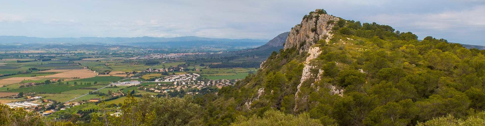

Ruta · Montgrí
Aquesta ruta curta però intensa ens donarà a conèixer l'entorn muntanyenc més pròxim a l’Estartit. Els trams d'inclinació pronunciada ens seran recompensats amb unes vistes immillorables a les…